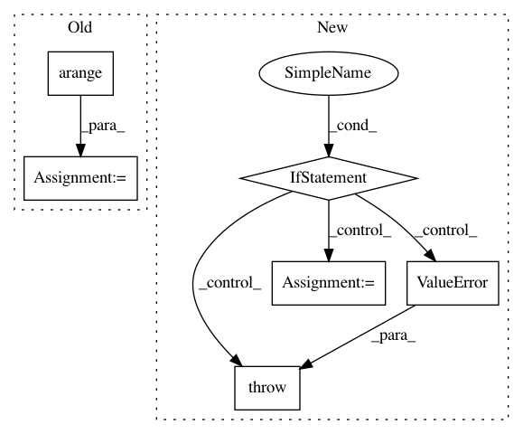

121e8301283c9aae98463cd22f965bd670b4e36d,dipy/reconst/csdeconv.py,,forward_sdt_deconv_mat,#Any#Any#,315
Before Change
i = 0
for l in np.arange(0, sh_order + 1, 2):
for m in np.arange(-l, l + 1):
b[i] = sdt[l / 2]
bb[i] = frt[l / 2]
i = i + 1
return np.diag(b), np.diag(bb)
def csdeconv(s_sh, sh_order, R, B_reg, lambda_=1., tau=0.1):
After Change
Funk-Radon Transform (FRT) matrix
if np.any(n % 2):
raise ValueError("n has odd degrees, expecting only even degrees")
n_degrees = n.max() // 2 + 1
sdt = np.zeros(n_degrees) // SDT matrix
frt = np.zeros(n_degrees) // FRT (Funk-Radon transform) q-ball matrix
b = np.zeros(len(n))
bb = np.zeros(len(n))
for l in np.arange(0, n_degrees*2, 2):
sharp = quad(lambda z: lpn(l, z)[0][-1] * np.sqrt(1 / (1 - (1 - ratio) * z * z)), -1., 1.)
sdt[l / 2] = sharp[0]
frt[l / 2] = 2 * np.pi * lpn(l, 0)[0][-1]
idx = n // 2
b = sdt[idx]
bb = frt[idx]
return np.diag(b), np.diag(bb)
In pattern: SUPERPATTERN
Frequency: 3
Non-data size: 6
Instances
Project Name: nipy/dipy
Commit Name: 121e8301283c9aae98463cd22f965bd670b4e36d
Time: 2013-11-14
Author: mrbago@gmail.com
File Name: dipy/reconst/csdeconv.py
Class Name:
Method Name: forward_sdt_deconv_mat
Project Name: scikit-image/scikit-image
Commit Name: c890a06b4ef71d5827ff9a399e203a37af0191a5
Time: 2018-12-06
Author: devel@sciunto.org
File Name: skimage/exposure/exposure.py
Class Name:
Method Name: _bincount_histogram
Project Name: mne-tools/mne-python
Commit Name: 693bd2d8c958cd343d1c6ea4f132ad8714a0c116
Time: 2019-03-01
Author: larson.eric.d@gmail.com
File Name: mne/forward/forward.py
Class Name:
Method Name: compute_orient_prior